IAInventIA
Manual de usuario
De la planilla al plan del día: todas las etapas para tomar tu inventario con InventIA.
Guía paso a paso para usar la aplicación de principio a fin: iniciar sesión, cargar tu maestro de materiales, planificar por semana o por grupos, contar en terreno, resolver diferencias, revisar el avance y administrar tu suscripción. Cada etapa incluye una captura real de la pantalla cuando corresponde.
inventiapp.cl · contacto@inventiapp.cl
Etapas
01Iniciar sesión y moverte por la apppág. 2
09Reconteo: corregir diferenciaspág. 10
02Cargar materiales, uno por unopág. 3
10Ver el avance: Dashboard Ejecutivopág. 11
03Cargar materiales desde Excelpág. 4
11Ver el avance: Dashboard Operativopág. 12
04Planificar: día, semana, mes, año o períodopág. 5
12Buscar cualquier material o conteopág. 13
05Grupos de conteo: planificar por frecuenciapág. 6
13Períodos de conteo e informes de cierrepág. 14
06Calendario: el mes de un vistazopág. 7
14Configuraciones: empresa, equipo y seguridadpág. 15
07Contar en terreno: tu plan del díapág. 8
15Suscripción y pagospág. 16
08Contar en terreno: escanear códigopág. 9
16Módulo de bodegapág. 17
·Resumen rápidopág. 18
Las capturas de pantalla son de un ambiente de prueba con datos ficticios ("Minera Andes"), no de datos de un cliente real. Las etapas nuevas de esta edición (Grupos, Calendario, Períodos y Suscripción) se describen sin captura. Los pasos describen el celular como caso principal: InventIA funciona igual en computador, con las mismas pantallas. Actualizado al 8 de septiembre de 2026.
01 · Primeros pasos
Iniciar sesión y moverte por la app
Cada persona entra con una cuenta creada por un administrador de su empresa. La única excepción es quien contrata un plan desde el sitio: esa persona crea su empresa y entra directo como administradora.
- 1
Abre InventIA en el navegador del celular o computador. Si ya te instalaron la app (ícono en la pantalla de inicio), ábrela desde ahí: funciona igual, incluso sin señal para las pantallas que ya visitaste.
- 2
Ingresa tu correo y contraseña y toca Ingresar. Si es tu primera vez, esas credenciales te llegaron por correo cuando el administrador te invitó.
- 3
¿Olvidaste tu contraseña? Toca ¿Olvidaste tu contraseña? bajo el botón de ingreso y sigue las instrucciones que te llegan al correo. Si revisar el correo es incómodo en terreno, toca ¿Prefieres un código?: recibes un código de 6 dígitos que se escribe directo en la pantalla.
- 4
¿No tienes cuenta todavía? Pide al administrador de tu empresa que te invite desde Configuraciones → Invitar equipo (ver etapa 14). No existe un formulario de alta abierto al público para operadores.
Nuevo · Contratar un plan desde el sitio
En inventiapp.cl, el botón
Suscribirme de los planes Básico y Profesional abre la app en la pantalla "Crea tu cuenta": nombre de la empresa, tu nombre, correo y contraseña. Después registras la tarjeta en Flow y quedas dentro como administrador, sin coordinar con nadie. El detalle está en la etapa 15.
Cómo se navega
La barra inferior tiene
Dashboard, Carga, Períodos, Grupos, Plan, Contar y
Reconteo. Arriba a la derecha están
SKUs, Calendario, Buscar y el engranaje de
Configuraciones. Un operador ve las pestañas de administrador con un candado: puede reconocerlas, pero no entrar. Junto a tu nombre aparece tu rol (Operador, Admin o Super-admin).
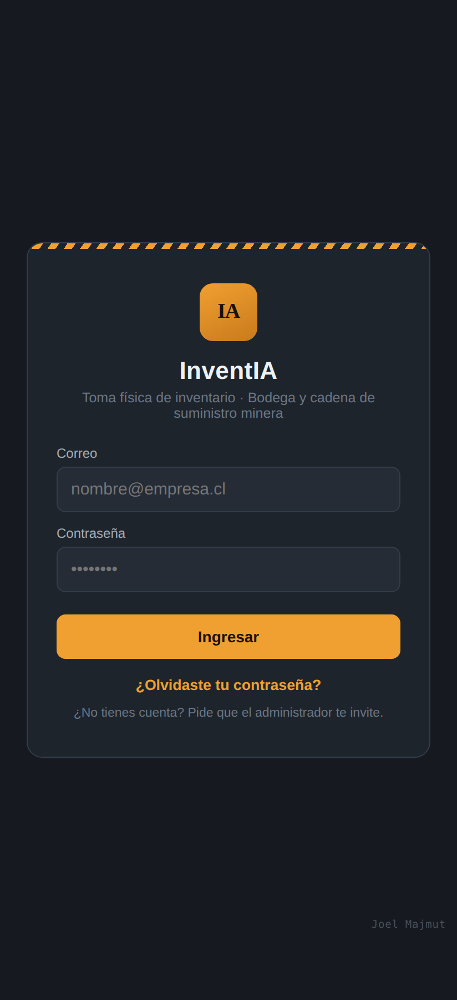
Pantalla de inicio de sesión
02 · Maestro de materiales
Cargar materiales, uno por uno
Ícono SKUs, arriba a la derecha. Sirve para dar de alta un material puntual o corregir uno existente sin tener que tocar todo el Excel.
Admin
- 1
En Código SKU escribe el código (el único obligatorio junto con el stock). El ícono de código de barras lo escanea en vez de tipearlo.
- 2
Completa lo que tengas a mano: Descripción, Batch, Unidad de medida, Ubicación general (la bodega), Ubicación específica, Storage bin, Stock según sistema y Costo unitario. Nada bloquea el guardado si falta, pero cada dato habilita algo después: buscar por texto, planificar por bodega, valorizar en pesos, clasificar por ABC.
- 3
Toca Guardar SKU. Si el código ya existe con la misma bodega, ubicación, storage bin y batch, te avisa que está repetido; si alguno cambia, se crea una fila nueva. Y si la bodega o la ubicación no están en tus Ubicaciones (Configuraciones), pregunta antes de crearlas: un dedazo no debería volverse una bodega nueva.
- 4
Para cambiar de sitio un material usa Mover material, en el Inicio de bodega junto a Movimientos y Stock (o el botón Mover de cada fila). Eliges la ubicación nueva de una lista con lo que ya existe, y si falta la agregas ahí mismo. Es la misma ficha: conserva su historial y su stock. La ventana muestra además dónde estuvo antes: fecha, sitio anterior, sitio nuevo y quién lo movió. Recargar el Excel con otro bin no lo mueve, crea una segunda ficha.
Qué significan los puntos de color
● Verde: el último conteo cuadró con el sistema. ● Amarillo: sobrante. ● Rojo: faltante. Sin punto: todavía no se ha contado.
Clasificación automática
Con el Costo unitario cargado, InventIA calcula sola la Clase ABC (A/B/C, por valor acumulado) y la refresca cada noche. La marca
Crítico sí es manual: es la que usa el grupo automático de críticos (etapa 5).
Recomendación
Completa siempre el
Storage bin con la ubicación física final. Con él, el Plan del día avisa si una carga posterior reubicó un material planificado, y Planificación y Calendario van rápidas.
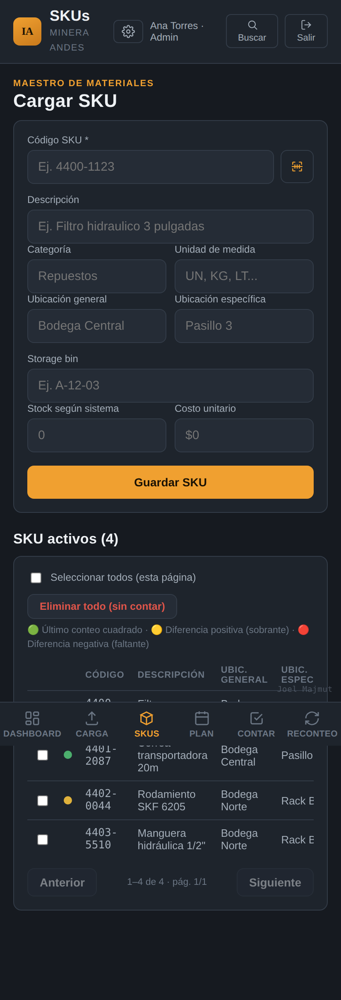
SKUs → formulario y listado con estado
03 · Maestro de materiales
Cargar materiales desde Excel
Pestaña Carga. Es la vía recomendada para partir: sube de una vez todo el maestro que ya tengas, venga de SAP o de cualquier otra planilla.
Admin
- 1
Toca Toca para elegir un archivo .xlsx o .csv y selecciona tu planilla.
- 2
InventIA detecta sola qué columna es cada dato y te muestra el mapeo antes de confirmar. Bodega, ubicación, storage bin, stock y costo son obligatorios: si falta alguno, "Confirmar e importar" queda deshabilitado. El resto es opcional.
- 3
Confirma la carga. Cada carga queda registrada en el Historial de cargas, con cuántas filas se procesaron y, si hubo errores, el motivo agrupado (ej. "Stock en negativo: 20 filas").
Identidad de un material
Un SKU es único por código + bodega + batch + ubicación + storage bin. El mismo material puede vivir en varios lugares de la misma bodega: cada bin es su propia fila, con su propio stock. Dos filas idénticas en el archivo: se queda con la última, y antes de confirmar te dice cuántas son y cuáles.
Stock por tipo (opcional)
Si tu ERP separa el stock por tipo, la carga puede mapear 4 columnas más: Bloqueado, SOH en tránsito 1, SOH en tránsito 2 y Transferencia. Se muestran junto al stock en Contar, Reconteo y el maestro, sumando
todo el material y no solo la ubicación que tienes al frente: el ERP deja el tránsito en una fila aparte, sin ubicación, que el buscador de Contar esconde para no mostrarte el mismo código dos veces. No cambian el cálculo de diferencia. Se ocultan igual que el stock cuando el conteo ciego está activo.
Nuevo · Lo que el archivo ya no trae
Al terminar una carga en modo
Agregar / complementar, InventIA cuenta los materiales que siguen activos pero que el archivo ya no trajo — bins renombrados en tu ERP, material consumido — y te ofrece desactivarlos. Nunca toca los ya contados en el ciclo abierto, y no se borra nada: conservan su historial.
Si vuelves a cargar después de contar
El Reconteo compara contra el stock más reciente: si con el dato nuevo un material ya cuadra, sale solo de la lista de pendientes, y la fila muestra "antes: X" con la fecha del cambio (ver etapa 9).
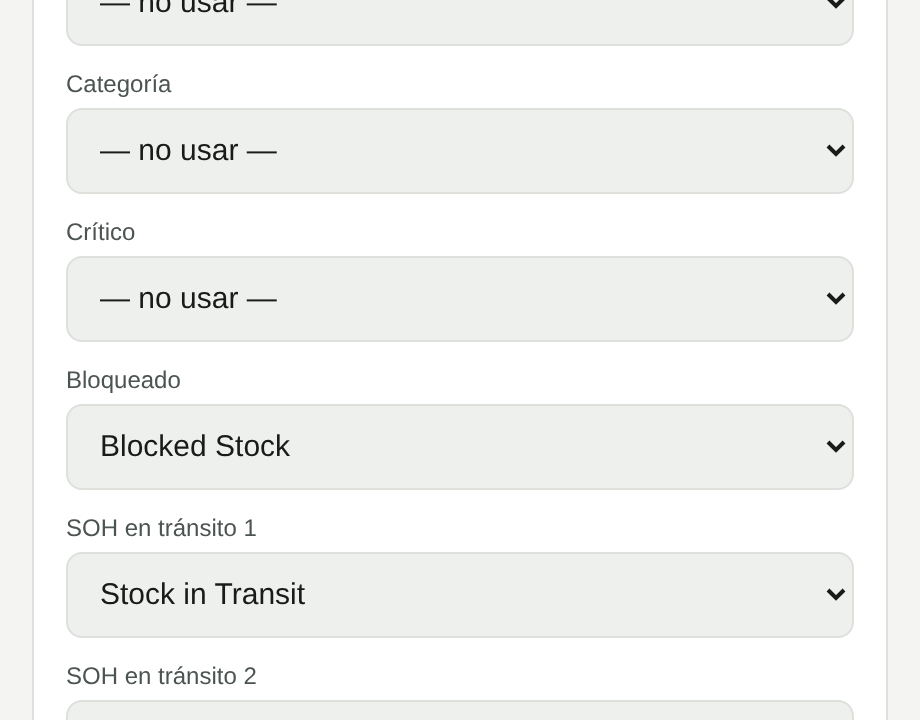
Carga → mapeo de columnas
04 · Planificación
Planificar: día, semana, mes, año o período
Pestaña Plan. Define qué se cuenta, dónde y quién es responsable antes de salir a terreno, y revisa la carga de trabajo en la ventana de tiempo que necesites.
Admin
- 1
Arriba elige la ventana: Día, Semana, Mes o Año, o un Período completo en el selector. Navega con las flechas ‹ ›. Desde Calendario o desde un día puntual puedes volver con "Ver toda la semana".
- 2
En Agregar a la planificación, elige la Fecha y cómo agregar: Por ubicación (bodega, y si quieres Ubicación específica y uno, varios o todos los Storage bins; también "SKU sin ubicación") o Por código de SKU.
- 3
Asigna un Responsable (opcional, solo de tu empresa) y una Nota si hace falta contexto, y toca Agregar.
- 4
En Día y Semana ves el detalle de cada entrada y puedes quitar un SKU puntual. En Mes, Año y Período la vista es resumida (totales por entrada). El Exportar PDF trae siempre el listado completo.
Nuevo · Agregar por código de SKU
Escribe 2 o más caracteres del código o la descripción: aparecen solo los pendientes del período, con su ubicación; los que ya están en otra entrada se marcan "Ya en el plan". Toca cada resultado (o Enter) y al presionar Agregar se crea una entrada por cada bodega + ubicación con exactamente esos materiales, visible como "Por código · bodega · ubicación" y bajo esa ubicación en Contar.
Nuevo · Aviso de solapamiento
Antes de agregar por ubicación, InventIA revisa cuántos de esos materiales ya están en otra entrada del período y te deja decidir si igual la agregas. Cada SKU se cuenta una sola vez en los totales, aunque esté en dos entradas.
Nuevo · Vistas grandes sin saturar
Mes, Año y Período piden solo los totales, en una llamada. Para ver o quitar SKU, cambia a Día o Semana.
Qué pasa con lo no planificado
Nadie está obligado a ceñirse al plan: se puede contar cualquier material buscándolo en Contar. Esos conteos quedan marcados como "fuera de plan" en Buscar y en el Dashboard.
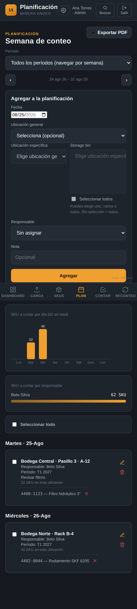
Plan → agregar a la planificación
05 · Planificación
Grupos de conteo: planificar por frecuencia
Pestaña Grupos. Listas de materiales que quieres contar con una frecuencia propia y seguir por separado del resto: por ejemplo "IE" para insumos estratégicos, "5S", o todos los críticos. InventIA genera el plan por ti según la capacidad real de tu equipo.
Admin
- 1
Toca Crear grupo: nombre, Frecuencia de conteo en días (ej. 90) y Fecha de inicio del ciclo. Si marcas Automático (Crítico), el grupo incluye solo y siempre todos los materiales marcados como Crítico; no hace falta agregarlos a mano.
- 2
Entra al grupo con Ver. En Agregar materiales busca por código o descripción, filtra por bodega y súmalos. El encabezado muestra "N materiales · M posiciones": un mismo código puede estar en varias bodegas o bins, y cada posición se cuenta por separado.
- 3
En Vista previa del plan indica cuántas Personas cuentan, cuántas Horas c/u por semana dedican y cuántos Materiales por hora avanzan. Toca Calcular vista previa: verás cuántos materiales pendientes hay y en cuántas semanas se reparten, zona por zona. No se crea nada hasta que confirmes.
- 4
Toca Confirmar y crear plan. Las entradas aparecen en Plan sin responsable: lo repartes después. La tarjeta del grupo muestra "Plan generado: N entradas · M SKU por contar · rango · K por venir". Generar de nuevo reemplaza esas entradas.
- 5
El Período actual del grupo muestra contados y pendientes y el ritmo reciente. Cuando pasa la fecha de término, el ciclo se cierra solo esa madrugada: queda en el Historial de ciclos cerrados quién se contó y quién no, el ciclo siguiente parte ese mismo día y todos los materiales vuelven a pendiente. Cada ciclo cerrado tiene su botón PDF con el detalle por material.
Nuevo · Pausar y reactivar
Pausar grupo lo saca de la lista y deja de cerrar ciclos, conservando materiales e historial. Si hay entradas futuras generadas por ese grupo, la app pregunta si también quieres borrarlas; lo ya contado no se toca. Desde "Grupos pausados" puedes
Reactivar cuando quieras, con fecha de inicio hoy.
Grupos y períodos son cosas distintas
Un grupo tiene su propio ciclo (cada 90 días, por ejemplo) y no cierra el período de conteo de la empresa ni aparece en Buscar. El período de la empresa (etapa 13) agrupa todos los conteos, vengan de un grupo o no.
06 · Planificación
Calendario: el mes de un vistazo
Ícono Calendario, arriba a la derecha. Cuánto se planificó, contó y recontó cada día del mes, con acceso directo a cada pantalla.
Operador y admin
- 1
Navega el mes con ‹ ›. Cada día muestra cuatro cifras: Planificado (SKU distintos en el plan de ese día), Contado, Recontado y Pendiente (planificado que todavía no tiene ningún conteo en el período actual).
- 2
Toca un día para abrir el Detalle del día. Desde ahí: Ir a Contar ese día (abre Contar con esa fecha), Ver en Planificación (abre Plan en la vista Día) o Ver lo contado (abre Buscar filtrado por ese día).
- 3
Un administrador ve toda la empresa. Un operador ve solo lo suyo: su plan y sus conteos.
Se actualiza solo
Cualquier cambio en Plan (agregar, quitar, editar una entrada) deja el Calendario marcado para volver a pedir datos frescos la próxima vez que entres; no hace falta cerrar sesión.
Nuevo · Más rápido con planes grandes
El cálculo del mes se rehizo para planes con muchas entradas por storage bin: con 158 entradas en un mes pasó de 3,4 segundos a menos de 0,1.
07 · Toma de inventario
Contar en terreno: tu plan del día
Pestaña Contar. Muestra solo lo que te toca a ti, hoy, sin tener que revisar la planificación completa de la semana.
Operador y admin
- 1
Si tu cuenta está vinculada a un responsable del plan (lo hace un admin en Configuraciones), Plan del día aparece solo. Elige bodega y ubicación y verás la lista de SKU pendientes de todas las entradas que calzan, incluidas las de distintos bins.
- 2
Toca un material de la lista, escribe la Cantidad contada, agrega foto si corresponde y toca Guardar conteo. La foto se reduce en el celular antes de subirse (unos 300 KB en vez de 3 MB), sin diferencia visible. Si lo encontraste en otra ubicación, marca la casilla y corrige antes de guardar.
- 3
¿No está en tu plan? Usa Agregar algo fuera del plan y busca por código o descripción: la búsqueda corre contra todo el maestro.
- 4
Sin señal, todo sigue funcionando: el plan del día queda en caché y los conteos se guardan en el dispositivo hasta sincronizar solos al volver la conexión. Si la señal está lenta, el guardado reintenta solo y nunca duplica un conteo.
Nuevo · "Plan" aunque lo tipees
Si buscas o escaneas un material que sí está en tu plan de ese día, el conteo queda con origen
Plan, no "Fuera de plan". Solo lo que de verdad no estaba planificado para ti ese día queda como fuera de plan.
Nuevo · Carga más rápida
La lista de SKU pendientes se pide al servidor en una sola llamada para todas las entradas del día, en vez de una por entrada. Con 20 o 30 entradas y señal débil se nota.
Avisos al elegir un material
Si el mismo código vive en más de un lugar, cada ubicación y bin aparece como fila separada. Si ya fue contado en este período, verás "Ya contado X veces". Si el maestro trae stock por tipo, aparece como referencia junto al Stock sistema.
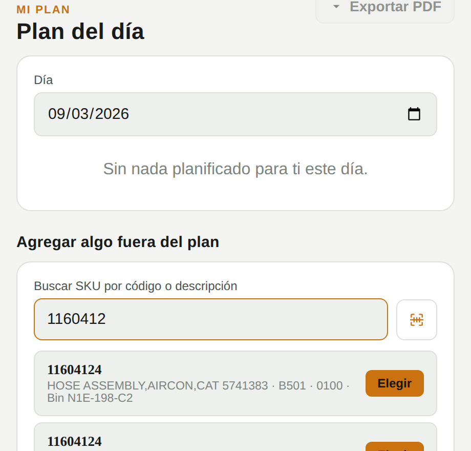
Contar → mismo código en dos ubicaciones
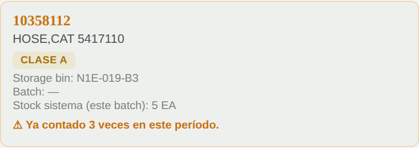
Contar → aviso de conteo repetido
08 · Toma de inventario
Contar en terreno: escanear código
El camino más rápido para encontrar un material sin escribir nada, ya sea desde Contar o desde el campo de código SKU en SKUs.
Operador y admin
- 1
Toca el ícono de escáner. InventIA pide permiso de cámara la primera vez; acéptalo para poder escanear.
- 2
Apunta la cámara al código de barras o QR pegado en el material y espera a que enfoque; la lectura es automática.
- 3
InventIA busca el código leído contra tu maestro de dos formas: primero como código de barras ya asociado a un SKU, y si no calza, como el código del SKU mismo.
- 4
Si el código coincide con más de un material (misma bodega con ubicación o bin distintos, u otra bodega), InventIA te deja elegir cuál es, mostrando bodega, ubicación y bin de cada coincidencia. Si no coincide con ninguno, puedes asociar ese código a un SKU existente ahí mismo.
Si la cámara no abre
Revisa que el navegador tenga permiso de cámara para InventIA (en celular, normalmente en Configuración → Apps → Navegador → Permisos) y que haya conexión al abrir el escáner por primera vez.
Origen del conteo
Un material escaneado que está en tu plan del día queda como "Plan"; uno que no, como "Fuera de plan". Igual que al buscar por texto.
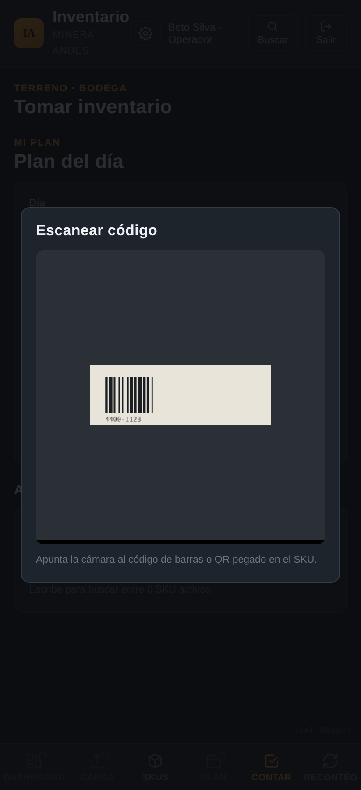
Contar → escanear código
09 · Corrección
Reconteo: corregir diferencias
Pestaña Reconteo. Reúne, sin que nadie tenga que ir a buscarlos, todos los materiales cuyo último conteo no cuadra con el stock de sistema actual.
Operador y admin
- 1
Arriba, el gráfico Reconteos pendientes por semana (32S, 33S, …) muestra cuántos quedan por resolver según la semana del último conteo. Toca una barra para ver solo esa semana; el aviso "Mostrando la semana…" te deja volver con Ver todas las semanas.
- 2
Para llegar directo a un material, usa Buscar un pendiente arriba de la tabla: escribe parte del código o de la descripción, o toca el ícono de cámara y escanea el código. Busca en toda la lista, no solo en lo que está en pantalla, y se combina con la semana elegida. Limpiar búsqueda vuelve a la lista completa.
- 3
Revisa la lista: cada fila muestra el stock de Sistema contra lo Contado, la Diferencia y una Causa probable que InventIA sugiere sola a partir del historial (ubicación distinta, diferencia recurrente, ambas o sin patrón).
- 4
Toca Recontar en el material que quieras verificar. Vuelve a contar físicamente y guarda la nueva cantidad. Si el segundo conteo confirma la diferencia, queda registrada como definitiva; si la corrige, el material sale de la lista.
Nuevo · Descartar (solo admin)
Cuando la diferencia se explica por un error del dato maestro (un stock mal digitado, por ejemplo) y no por algo que haya que verificar en bodega, un administrador puede tocar
Descartar e indicar el motivo. El material sale de pendientes sin recontar, el motivo queda en Auditoría, y la lista se queda en la semana que estabas mirando.
Compara contra el stock actual
Si cargaste un Excel nuevo después del conteo y el stock cambió, la diferencia se recalcula sola contra el dato más reciente y la fila muestra "antes: X" con la fecha del cambio. Si con el stock nuevo ya calza, el material sale solo de la lista.
Por qué importa
El Reconteo separa un error de tipeo de una pérdida real. Todo lo que pasa por acá alimenta la Valorización de diferencias del Dashboard Ejecutivo y el informe de cierre del período.
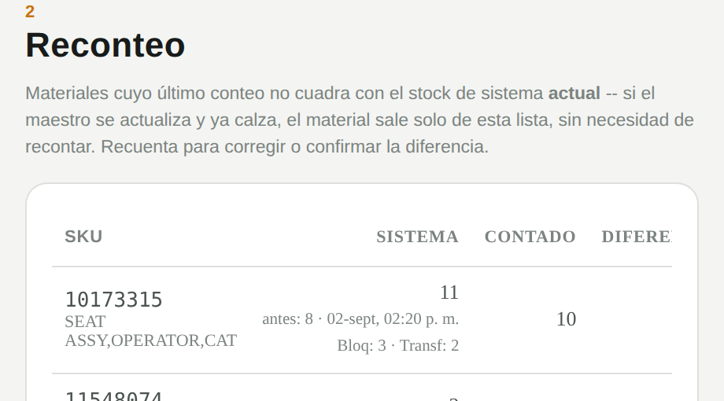
Reconteo → diferencias pendientes, con huella y stock por tipo
10 · Seguimiento
Ver el avance: Dashboard Ejecutivo
Pestaña Dashboard, toggle Ejecutivo. Pensado para quien necesita el resultado en plata y en riesgo, no el detalle operativo día a día. Todo se calcula sobre el período de conteo actual.
Admin (según plan de tu empresa)
- 1
Avance por ubicación general y Proyección de término, calculada al ritmo de conteo de los últimos 14 días.
- 2
Adherencia al plan: SKU planificados en el período contra los que aún faltan por contar.
- 3
Exactitud resume, sobre el último conteo de cada SKU, qué porcentaje no tuvo diferencia y qué porcentaje quedó en la ubicación correcta, con tendencia mes a mes y ranking por bodega.
- 4
Valorización de diferencias traduce excedentes y faltantes a pesos usando el costo unitario; más abajo, el Top 10 de pérdidas y excedentes con más impacto, Clasificación ABC con % contado por clase, Ranking por responsable y SKU pendientes por ubicación general.
Exportar
El botón
Exportar informe genera un PDF con este mismo resumen, listo para compartir con quien no tiene acceso a la app.
Nuevo · Informe de cierre automático
Cuando un período se cierra (porque marcas otro como actual o porque empieza uno programado), InventIA guarda sola una foto de este dashboard con los reconteos que quedaron sin resolver. Está en Períodos → Informes de cierre (etapa 13).
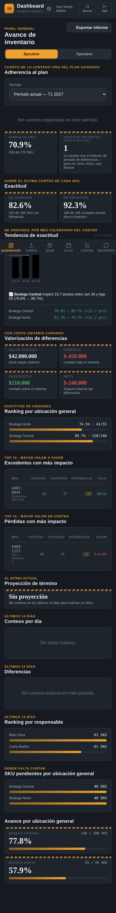
Dashboard → Ejecutivo
11 · Seguimiento
Ver el avance: Dashboard Operativo
Pestaña Dashboard, toggle Operativo. El día a día del conteo: qué se hizo, cuándo y con cuántas diferencias.
Operador y admin
- 1
Avance de inventario por bodega: SKU con al menos un conteo sobre el total activo.
- 2
Estado general de SKU muestra el maestro completo por estado (contado o pendiente) y clase ABC, con filtro de criticidad (Todos, Solo críticos, Solo no críticos). Útil para ver de un vistazo qué falta, sin ir a Buscar.
- 3
Las tablas Diario, Semanal y Mensual muestran SKU contados, con diferencia, reconteos y unidades contadas por período, con los reconteos en su propio color.
Actualizado · Más simple
Se quitaron las tarjetas "Conteos recientes" y "Materiales contados" y el filtro de rango de fechas del Estado general de SKU: no agregaban información que no esté ya en Buscar y en el Calendario, y hacían más lenta la pantalla.
Períodos de conteo
Si tu empresa usa períodos (ej. "T1 2027"), todo el Dashboard se acota al período marcado como actual. Sin un período creado, se muestra el histórico completo.
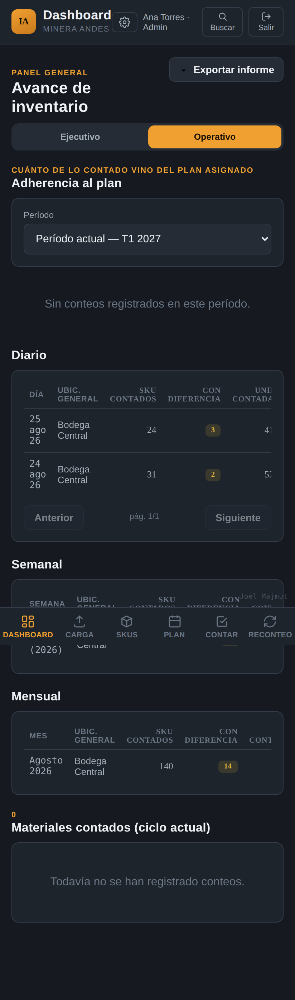
Dashboard → Operativo (captura anterior a la simplificación)
12 · Consulta
Buscar cualquier material o conteo
Ícono Buscar, arriba a la derecha. El lugar para responder "¿cuándo se contó esto y qué encontraron?", esté o no en el plan.
Operador y admin
- 1
Escribe un código, descripción, batch o storage bin, o deja el campo vacío para ver todo. Filtra por Ubicación general, Estado (incluido Pendiente de reconteo, los mismos materiales de la pestaña Reconteo), Grupo de conteo (ahí está "Críticos"), Clase ABC, "solo con fotos", "solo fuera de plan" y, si tu empresa usa períodos, por período.
- 2
Toca cualquier encabezado de columna para ordenar. El título y los gráficos muestran el total real que cumple los filtros, no solo lo cargado en pantalla. La columna Origen distingue "Plan" de "Fuera de plan".
- 3
Revisa el gráfico interactivo Quién contó y el resumen por estado: ambos se actualizan con los filtros activos.
- 4
En Exportar, descarga a Excel los resultados que ves (con filtros), o un rango de fechas de conteos completo para cargar a un ERP. Marca uno o varios resultados y usa Exportar a PDF para una ficha con foto, observación y detalle.
Conteos sin conexión
Si un conteo se hizo sin señal, Buscar lo marca aparte con la hora real en que se capturó en terreno, distinta de la hora en que se sincronizó.
Desde el Calendario
"Ver lo contado" en el detalle de un día abre esta pantalla ya filtrada por esa fecha.
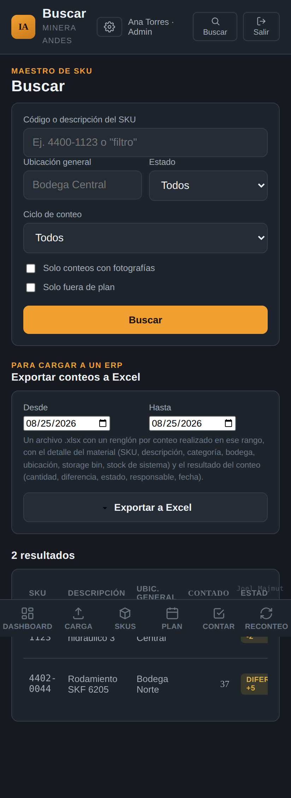
Buscar → filtros y resultados
13 · Cuenta
Períodos de conteo e informes de cierre
Pestaña Períodos. Un período (ej. "T1 2027", "Cierre 2027") separa tomas de inventario distintas. Los conteos nuevos quedan etiquetados solos con el que esté marcado como actual, y el Dashboard, Reconteo y Buscar se acotan a él.
Admin
- 1
En Crear período de conteo escribe el nombre y la Fecha de inicio. Si la fecha es hoy o pasada y no hay otro período actual, queda como actual de inmediato.
- 2
Marcar como actual cambia el período vigente. El que estaba activo se cierra en ese momento y su informe queda guardado. La app te lo advierte antes, porque no se puede deshacer.
- 3
Puedes Editar la fecha de inicio de un período. Si creas un período con fecha futura, no tienes que acordarte: se activa solo ese día.
- 4
En Informes de cierre, toca Ver informe para abrir la foto que quedó guardada: avance, exactitud, valorización, ranking y los reconteos que quedaron sin resolver al cerrar. Se puede exportar a PDF igual que el dashboard.
Nuevo · Períodos programados
Cada mañana InventIA revisa si algún período con fecha de inicio ya cumplida debería ser el actual y, si corresponde, lo activa sola, cerrando el anterior y generando su informe. En la pestaña aparece un aviso los días previos para que no sea sorpresa.
Qué se guarda en el informe
Es una fotografía del momento del cierre, no una consulta en vivo: aunque después cargues un Excel nuevo o recuentes, el informe del período cerrado no cambia. Sirve como respaldo de auditoría.
14 · Cuenta
Configuraciones: empresa, equipo y seguridad
Ícono de engranaje, junto a tu nombre. Todo lo que un administrador necesita para mantener la cuenta al día.
Admin
- 1
En Tu empresa editas el nombre que ven todos en la app y el interruptor de Conteo ciego: oculta el stock de sistema a los operadores mientras cuentan (un admin lo sigue viendo). InventIA igual avisa al operador, sin revelar la cifra, si su cantidad se ve muy atípica.
- 2
En Invitar equipo completa nombre y correo y toca Enviar invitación. Solo puedes invitar personas a tu propia empresa.
- 3
En Mi equipo edita el nombre con el lápiz, vincula a cada operador con su responsable del plan, o desactiva a alguien con la papelera si deja la empresa, sin perder su historial.
- 4
En Verificación en dos pasos activa un código de app autenticadora (Google Authenticator, Authy, 1Password) además de la contraseña. Es por cuenta, no por empresa. Recomendada para administradores.
- 5
En Ubicaciones está la lista de bodegas de tu empresa y las ubicaciones específicas de cada una. Puedes crear una bodega antes de tener materiales (útil si vas a cargar a mano), agregarle ubicaciones, desactivar una que ya no se usa (sale de los selectores, los materiales que están en ella no se tocan) y renombrar. Renombrar la cambia en todas partes: materiales, conteos, planificación y grupos. Si escribes el nombre de otra bodega que ya existe, las dos se juntan en una; si eso dejaría materiales repetidos en el mismo sitio, la app lo avisa y no hace nada.
- 6
Más abajo: tema visual, Auditoría de cambios (según plan) y Plan y facturación (etapa 15).
Una sesión por persona
Si entras desde otro dispositivo, la sesión anterior se cierra y la app te lo avisa. Evita que dos personas cuenten con la misma cuenta.
Nuevo · Responsables solo de tu empresa
Al asignar un responsable en Plan o en Mi equipo, la lista muestra únicamente personas de tu empresa. La base de datos rechaza cualquier otra asignación.
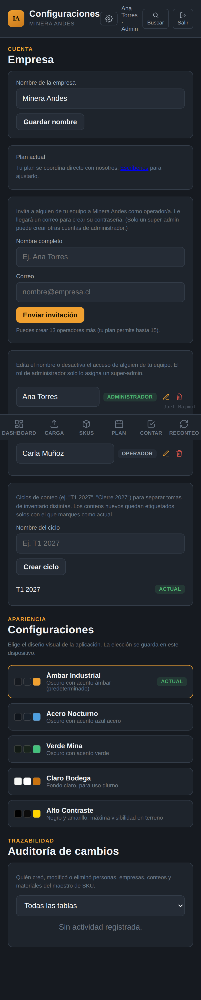
Configuraciones → empresa y equipo
15 · Cuenta
Suscripción y pagos
Para los planes Básico y Profesional, todo se hace desde el sitio y desde Configuraciones → Plan y facturación. El plan Empresa se coordina a medida con InventIA.
Admin
| Plan | Precio neto | Cobro mensual en tarjeta |
|---|
| Básico | 160 USD/mes | $187.000 CLP, IVA incluido |
| Profesional | 300 USD/mes | $350.000 CLP, IVA incluido |
| Empresa | A medida | Según contrato |
- 1
Suscribirse: en inventiapp.cl toca Suscribirme en el plan que quieras, crea tu cuenta y registra la tarjeta en la página segura de Flow. El primer cobro se hace en ese momento y luego cada mes, automáticamente.
- 2
Cambiar de plan: en Plan y facturación, Cambiar a Profesional o Cambiar a Básico. El cambio es inmediato, sin volver a registrar la tarjeta.
- 3
Actualizar método de pago: vuelve a la página de Flow para registrar otra tarjeta.
- 4
Cancelar suscripción: sigues con acceso hasta el fin del período ya pagado y no se vuelve a cobrar. Pasados 31 días desde el último cobro, la cuenta queda vencida y puedes volver a suscribirte cuando quieras.
Nuevo · Si un cobro falla
Flow reintenta el cobro hasta 3 veces. Si sigue impago, la cuenta queda bloqueada con el mensaje "Hubo un problema con el último cobro". Cuando regularices (tarjeta nueva o cobro exitoso), toca
Ya regularicé el pago, verificar en esa misma pantalla: InventIA consulta a Flow y te deja entrar al instante.
Precios en pesos
El cobro se hace en pesos chilenos con un dólar de referencia de $980, revisado periódicamente. Si cambia, verás el monto nuevo en el sitio antes del siguiente cobro.
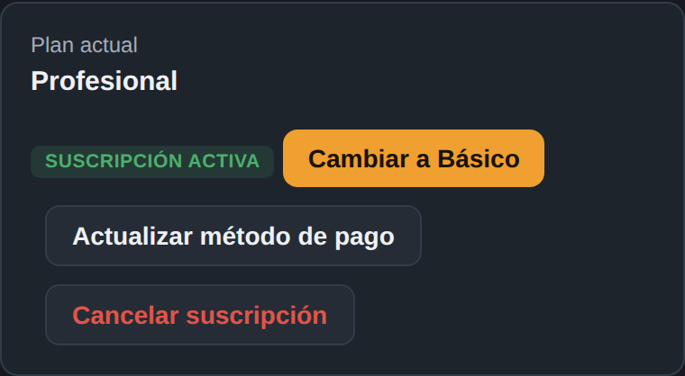
Configuraciones → Plan y facturación
16 · Módulo de bodega
Bodega: ingresos, salidas y stock al día
Módulo opcional que InventIA activa por empresa. Al entrar, en vez del Dashboard ves un Inicio con cuatro opciones: Ingreso, Salida, Inventario y Dashboard.
Operador y admin
- 1
Ingreso. Busca el material por código o descripción (o escanéalo), indica la cantidad y agrégalo. Completa proveedor, orden de compra y guía de despacho; la foto de la guía es obligatoria y puedes sumar fotos del material. Si el código no existe, toca Crear SKU nuevo: nace con stock 0 y el ingreso le pone el saldo. Cada línea acepta el costo unitario, sugerido desde el maestro y corregible, y abajo se suma el monto del ingreso.
- 2
Salida. Agrega los materiales, elige quién retira (lista que mantiene el administrador), quién despacha y el destino. No se puede sacar más de lo que hay: si el material está pero el sistema dice que no, cuéntalo y ajusta el stock antes.
- 3
Ajustar el stock. Desde Reconteo, Ajustar stock lleva la cantidad contada al stock; desde Stock, Ajustar sirve para mermas o correcciones. El administrador lo aplica de inmediato; el operador lo propone y queda pendiente.
- 4
Movimientos y Stock. Si un área devuelve material, en Movimientos toca Devolver sobre la salida que lo entregó: solo puedes devolver hasta lo que queda por volver. El stock sube al guardar y el consumo del área se descuenta solo. Al guardar un ingreso o una salida, la app ofrece Imprimir comprobante ahí mismo; el de salida trae las firmas de quien entrega y quien recibe. En Movimientos ves todo lo registrado, apruebas o rechazas pendientes (admin), anulas con motivo y reimprimes cualquier comprobante. En Stock ves el saldo por material, su Kardex (cada movimiento con saldo corrido) y exportas a Excel. Si el material se lleva a otra bodega, usa Transferir en su fila: indicas cuántas unidades y a qué sitio van, llega de inmediato y queda un traslado en el kardex de los dos. Mover material es otra cosa: corrige el sitio de la ficha completa; el traslado mueve una cantidad.
- 5
Reportes. Desde el Inicio o el Dashboard, con un rango de fechas: cuánto consumió cada persona, área o destino, cuánto ingresó cada proveedor y la valorización del stock, todo exportable a Excel. En Stock puedes fijar un mínimo por material (o cargarlo por Excel), filtrar los que están bajo ese mínimo y clasificar cada material por tipo (EPP, repuesto, sustancia peligrosa, componente u otros), que también agrupa los reportes.
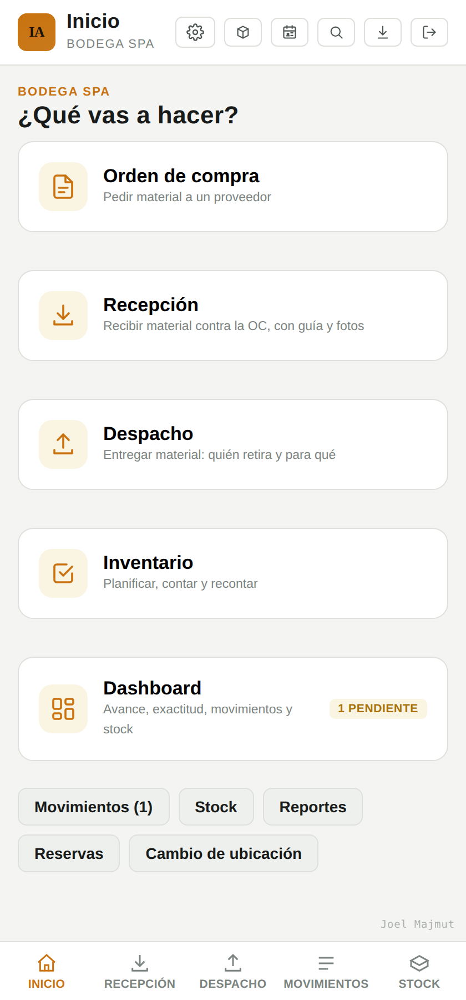
Inicio → Ingreso, Salida, Inventario y Dashboard
16 · Módulo de bodega
Bodega: activación, costos y trabajo sin señal
Tres cosas que conviene tener claras antes de empezar a usar el módulo en terreno.
Operador y admin
Cómo se activa
Lo activa InventIA por empresa. Si ya tenías materiales cargados, Movimientos te avisa cuántos tienen stock sin ningún movimiento y te ofrece
Registrar apertura de stock: deja ese saldo como primer movimiento del kardex sin cambiar el stock. También se registra sola en la primera carga de Excel posterior a la activación. Desde ahí el saldo solo cambia con ingresos, salidas y ajustes.
De dónde sale el costo
Manda la última compra: cada ingreso que lleva costo pasa a ser el costo de ese material. En la línea del ingreso viene sugerido el costo actual, así que ves qué estás confirmando antes de guardar.
Cuando esa compra no es el costo con el que quieres valorizar —una compra de urgencia, un flete cargado por error, un precio mal escrito en la guía— corrígelo en
Inventario, columna
Costo. Solo los administradores pueden editarla.
Sobre la valorización
El valor sale del costo que trae cada movimiento y, si no lo tiene, del costo del maestro. Los materiales con stock pero sin costo cargado se informan aparte y no se suman al total, para que la cifra no quede corta sin avisar.
Sin señal
Ingresos y salidas se guardan en el celular y se envían solos al volver la conexión. Una salida registrada sin señal que ya no alcanza el stock queda "pendiente de revisión" para el administrador, sin perderse.
El saldo solo cambia con ingresos, salidas y ajustes
Resumen
La ruta completa, en una página
Si necesitas recordar el orden general sin releer todo el manual, esta es la secuencia típica de un ciclo de inventario con InventIA.
Contratar el plan desde el sitio o recibir la invitación del administrador
Crear el período de conteo, con fecha de inicio programada si quieres
Cargar el maestro de materiales (Excel o uno por uno), con costo y storage bin
Armar grupos de conteo con frecuencia propia y dejar que generen su plan
Planificar el resto: fecha, bodega, bins y responsable, revisando Mes o Período para la carga total
Revisar el Calendario para ver qué toca cada día
Contar en terreno, con o sin señal, escaneando cuando se pueda
Resolver o descartar lo que quedó en Reconteo, semana por semana
Seguir el avance en el Dashboard a diario, por Clase ABC si el maestro tiene costos
Usar Buscar para resolver cualquier duda puntual, con filtros y exportación
Mantener equipo, seguridad y suscripción al día en Configuraciones
Cerrar el período y guardar su informe, o dejar que el siguiente se active solo
¿Se te quedó algo pendiente?
Este manual cubre el flujo completo tal como funciona la app hoy. Si tu empresa tiene un caso particular (un maestro muy grande, varias bodegas con reglas distintas, o dudas sobre qué plan te conviene), escríbenos directo a contacto@inventiapp.cl.
Para el detalle técnico de qué permite y qué no cada rol y cada plan, y cómo se protegen tus datos, revisa el
Manual técnico de InventIA.